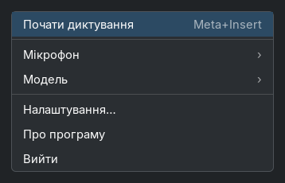
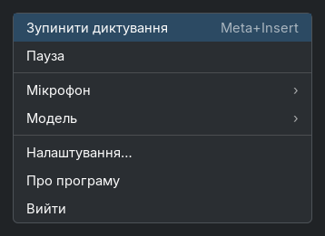
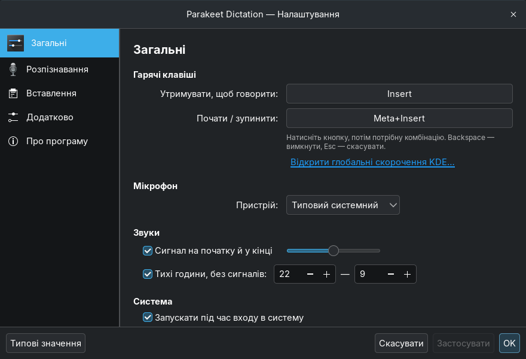
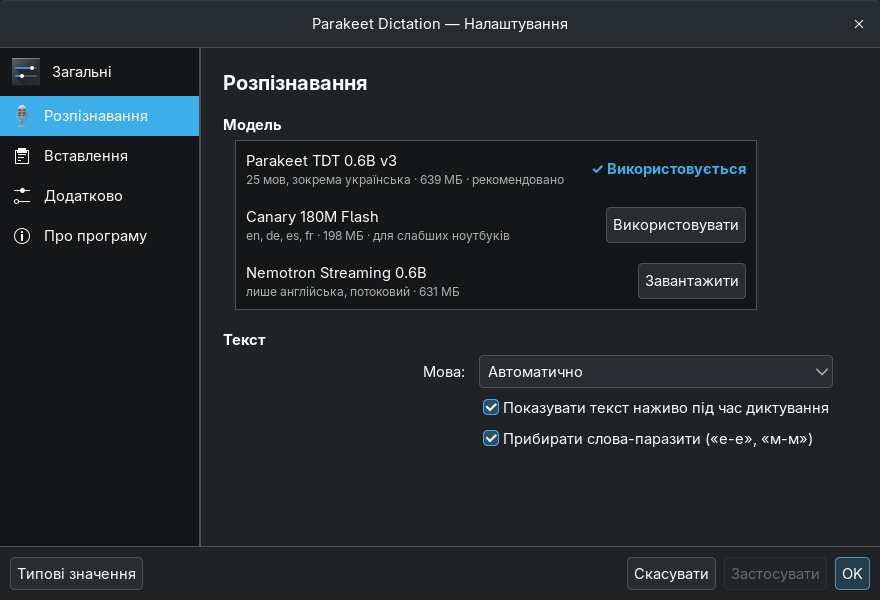
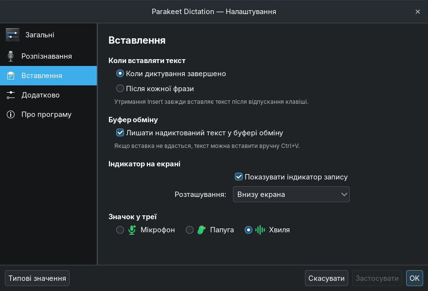
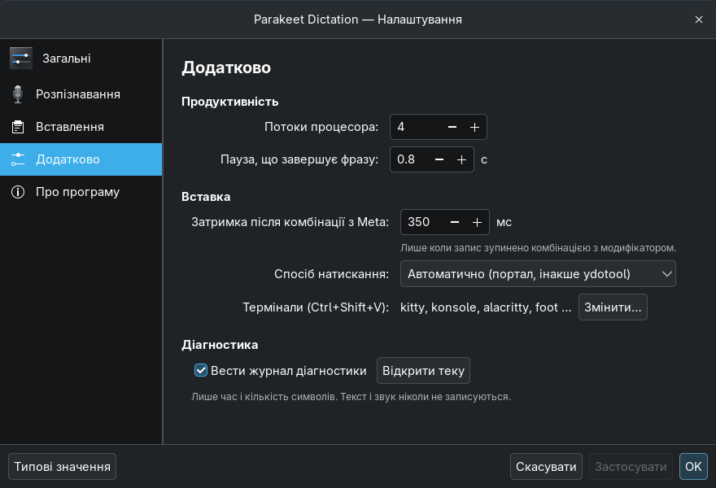
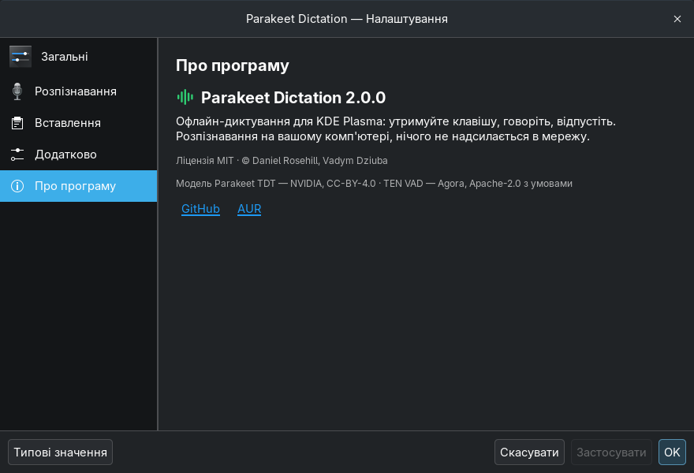

Parakeet Dictation — макети меню й налаштувань
Відрендерено справжнім GTK3 з темою Breeze-Dark (одноразовий прототип, не робочий код).
Специфікація: docs/superpowers/specs/2026-10-15-tray-settings-redesign-design.md.
Меню в треї малює сама Plasma, тож шрифти й відступи там будуть трохи інші —
тут показано склад і порядок пунктів.
Меню в треї


Налаштування — Загальні

Налаштування — Розпізнавання

Налаштування — Вставлення

Налаштування — Додатково

Налаштування — Про програму
